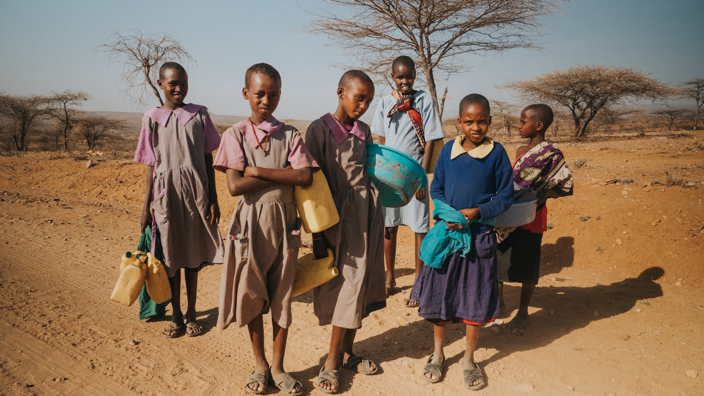
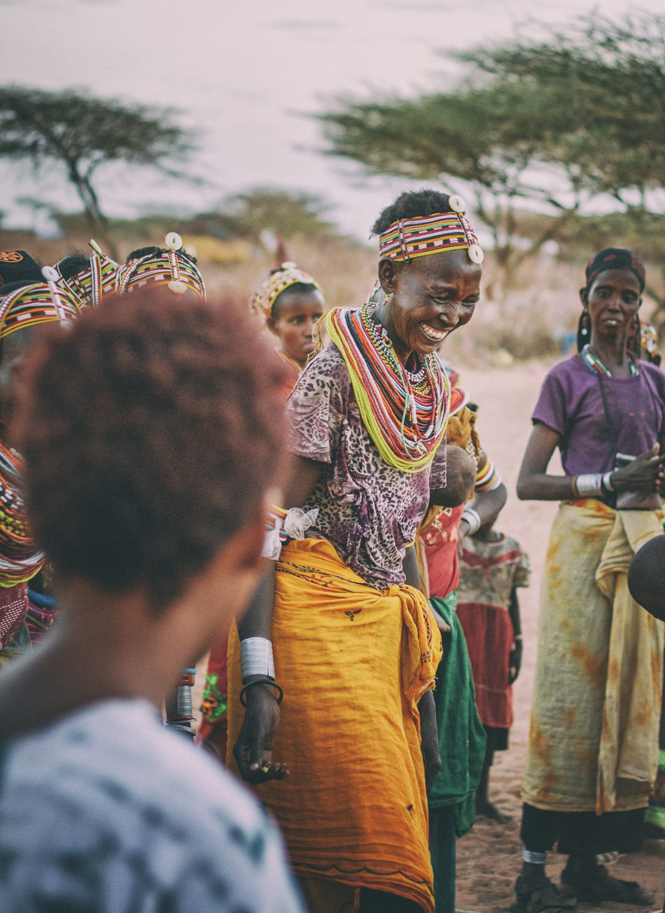
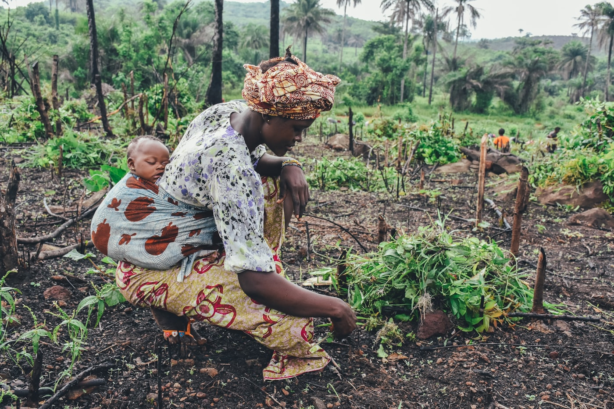
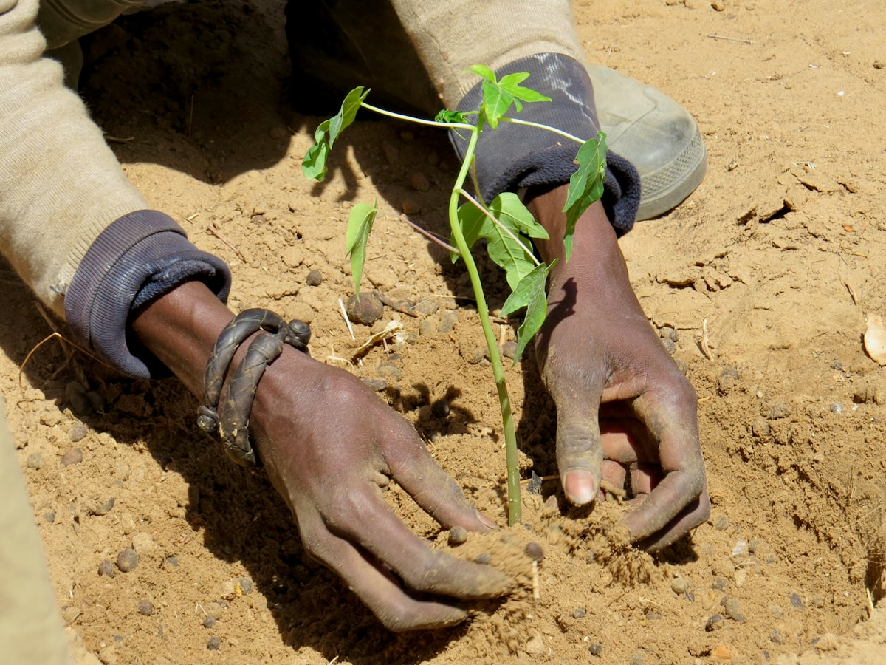
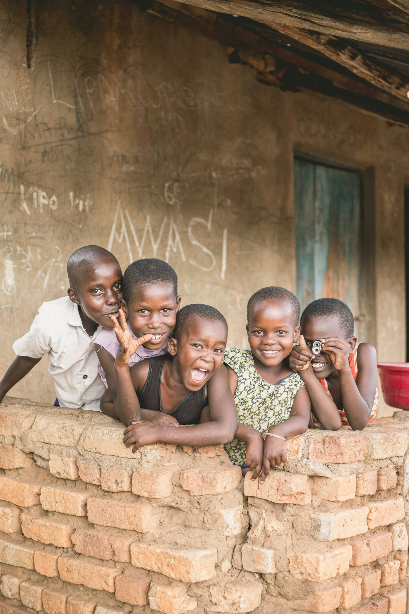

Water & Food Security
Rainwater harvesting, water pans, dams and water-smart agriculture that keep families fed through the dry season.
SkyVast Green Initiative is the technology-powered bridge between global capital and Africa's most water-vulnerable communities — turning every dollar into measurable, lasting transformation across Kenya's arid and semi-arid lands.
Enter the immersive experience — From Dust to Dawn
Every figure below is monitored through real-time dashboards, GPS-tagged assets and AI tracking — so donors see exactly where their capital lands.
SkyVast doesn't tackle drought one problem at a time. Each deployment advances all six pillars at once — water unlocks health, health unlocks education, and livelihoods make it last.
Rainwater harvesting, water pans, dams and water-smart agriculture that keep families fed through the dry season.
Clean water access, sanitation and wellbeing — cutting waterborne disease and the daily burden of the long walk for water.
Schools, vocational training and knowledge transfer so communities can operate and maintain every system we build.
Reforestation and ecosystem restoration — over two million trees, every one GPS-tagged and tracked to survival.
Income, enterprise and women- & youth-led empowerment — from coffee to honey, "Beans to Trees" proves it replicates.
Drought adaptation engineered for the ASALs — infrastructure and practices that hold up as the climate gets harsher.
We pair U.S. nonprofit structure with on-the-ground Kenyan delivery, and we instrument it with technology — so impact isn't a story you're told, it's a number you can check.
Every SkyVast deployment runs the same disciplined path — so results are repeatable and reportable, county after county.
Map the community's water reality with data — rainfall, terrain, households and existing assets — to find the highest-leverage intervention.
Design the right-sized solution and Pack tier for that specific village, school or county. No copy-paste infrastructure.
Construct tanks, pans, dams and reforestation with local labour — keeping skills and income in the community.
Train residents to operate, maintain and own each system, and launch livelihood enterprises around the new water security.
Verify outcomes on the dashboard, document the proof, and replicate the model to the next community — at scale.
A disciplined, five-phase impact model means donors fund a process, not a one-off — and every phase produces evidence.
From a single family's rainwater tank to county-wide infrastructure — pick the Pack that matches your giving capacity. Every tier is fully tracked.
A rainwater harvesting tank that secures clean water for one family year-round.
Shared water systems and reforestation reaching an entire village or school.
Multi-village infrastructure that anchors resilience across a whole cluster.
County-scale dam & ecosystem infrastructure — transformation at the largest scale.
The tank changed everything. My children are in school instead of walking six hours for water — and our shamba is green again.
What sold our board was the dashboard. We could see the trees, the litres, the households — verified. That is rare in this sector.
SkyVast trained our women's group to run the water pan and start a honey enterprise. The income stays here now.
Real communities across Kenya's arid and semi-arid lands — where water changes everything.




Trusted by funders, foundations & community partners across two continents
Whether you give $500 or fund a $1M county system, you'll see exactly what it built — verified, GPS-tagged and reported. Let's transform the next community together.
Quarterly proof points, new deployments and funding opportunities — straight to your inbox.
No spam. Unsubscribe anytime.